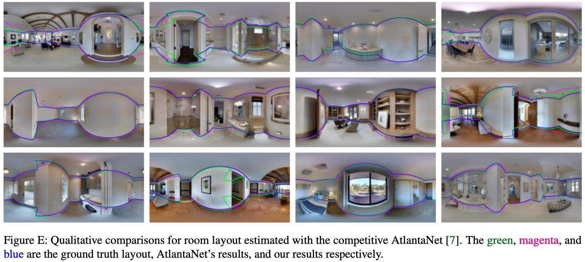
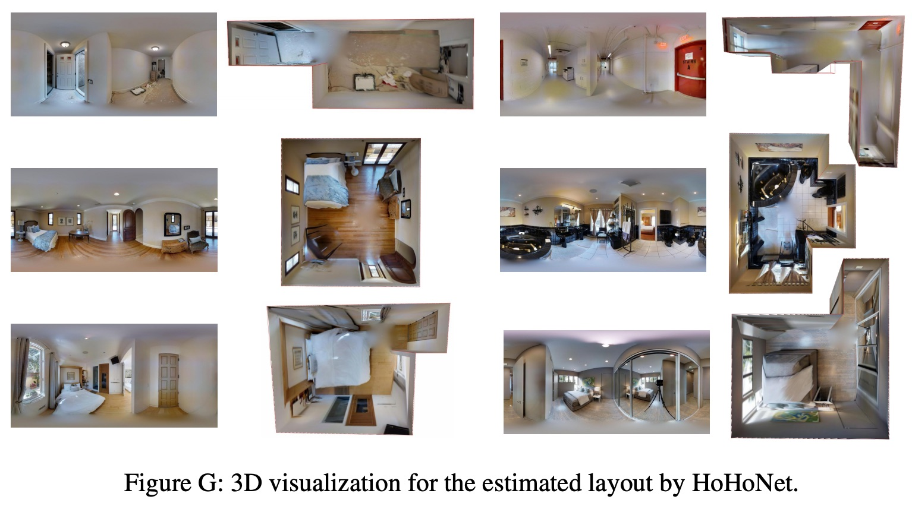
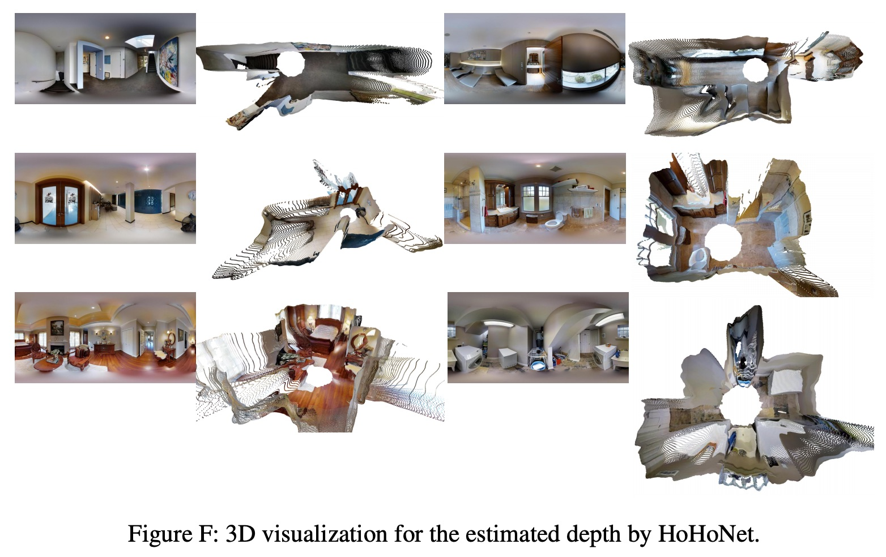
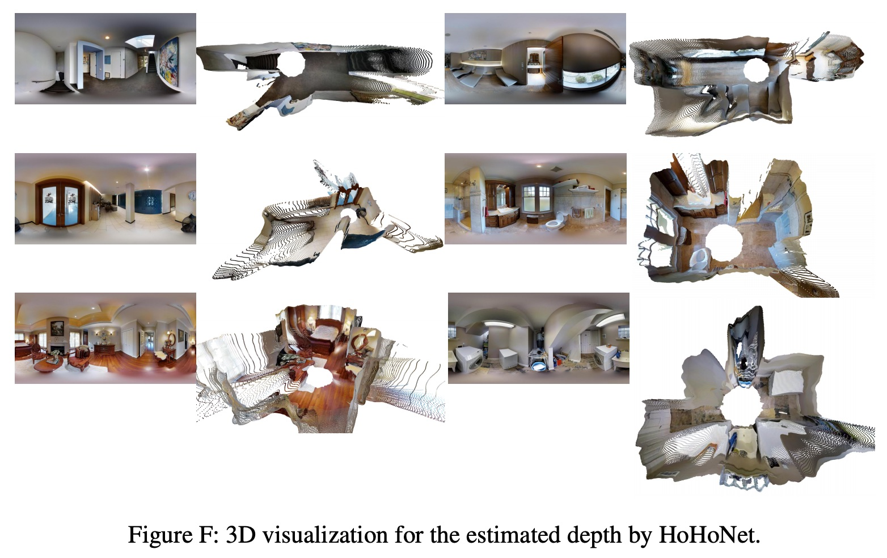
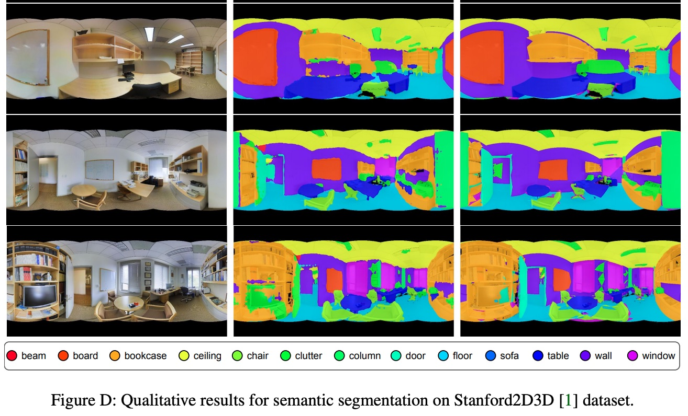

Abstract
We present HoHoNet, a versatile and efficient framework for holistic understanding of an indoor 360-degree panorama using a Latent Horizontal Feature (LHFeat). The compact LHFeat flattens the features along the vertical direction and has shown success in modeling per-column modality for room layout reconstruction. HoHoNet advances in two important aspects. First, the deep architecture is re-designed to run faster with improved accuracy. Second, we propose a novel horizon-to-dense module, which relaxes the per-column output shape constraint, allowing per-pixel dense prediction from LHFeat. HoHoNet is fast: It runs at 52 FPS and 110 FPS with ResNet-50 and ResNet-34 backbones respectively, for modeling dense modalities from a high-resolution 512×1024 panorama. HoHoNet is also accurate. On the tasks of layout estimation and semantic segmentation, HoHoNet achieves results on par with current state-of-the-art. On dense depth estimation, HoHoNet outperforms all the prior arts by a large margin.
Links
News
- April 3, 2021: Release inference code, jupyter notebook and visualization tools. Guide for reproduction is also finished.
- March 4, 2021: A new backbone HarDNet is included, which shows better speed and depth accuracy.
Demo Results
Layout visualization
 Depth visualization
 

Semantic segmentation visualization
BibTeX
Released after CVPR 2021.